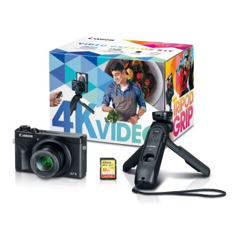
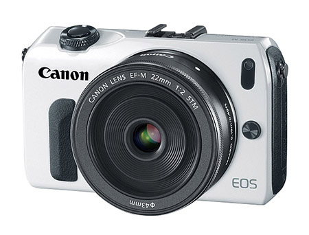

-
INICIO
-
Celulares
-
Categorias
-
Tipo
-
Iniciar sesión

CANON G7X MARK III
- CÁMARA FOTOGRÁFICA CANON G7X MARK III POWERSHOT Kit para la creación de videos
Garantía 1 año
Entrega en Bogotá de 1 a 3 días hábiles y a nivel nacional de 3 a 5 días hábiles *Ciudades no principales o apartadas puede tardar más
Sabías que las cámaras CANON funcionan como WEBCAM. Ideal para tus conferencias, video llamadas, trasmisiones en vivo, podcast, etc. Con excelente calidad.
(Software EOS web cam utility)
Si compras tu cámara puedes unirte a la comunidad exclusiva de Canon y tomar los talleres gratuitos de manejo de equipos. https://www.miportalcanon.com.mx/registro-talleres/#!/
Cámaras Digitales Avanzadas de Gama Alta
Eleve el nivel de su creatividad con el kit para la creación de videos de la PowerShot G7 X Mark III. Bien sea para hacer un videoblog sobre su producto favorito o para capturar el viaje de su vida, este kit para la creación de videos incluye lo necesario para que inicie su videoblog o canal en las redes sociales. Con la cámara PowerShot G7 X Mark III, que ofrece grabación de video en 4K, transmisión en vivo* y compatibilidad con video vertical**, además de una nueva Empuñadura para Trípode HG-100TBR con control remoto Bluetooth® desmontable, una tarjeta de memoria SDHC de 32 GB y una batería adicional, este kit para la creación de videos es una herramienta indispensable para los amantes de la creatividad.

Canon EOS
- Las principales características de las cámaras sin espejo con objetivos intercambiables son:
Tienen un tamaño pequeño, algo mayor que el de las cámaras compactas, pero menor que el de las réflex gracias a la ausencia del espejo
La mayoría cuentan con un visor electrónico. En algún casos no disponen de visor (utilizan la pantalla LCD) y en otros disponen de visor óptico
Lo más habitual es el sistema de enfoque por contraste. Algunas poseen un sistema mixto por contraste y detección de fase
El tamaño de sensor más habitual es APS-C (aproximadamente 23,5 x 16,6 mm, ya que existen pequeñas variaciones entre fabricantes), aunque las hay con sensores más pequeños
Todas permiten el registro de imágenes en formato jpeg y RAW
Disponen de un sistema de objetivos intercambiables. El número de objetivos disponibles suele ser algo limitado, aunque en algunos casos disponen de adaptadores que permiten utilizar objetivos de cámaras réflex
Poseen funciones que permiten controlar de forma manual todos los aspectos técnicos de la toma. No obstante, suelen disponer también de programas que permiten la captura de imágenes en modo automático